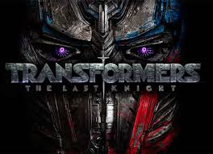
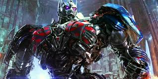
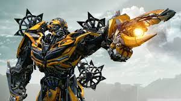

TRANSFORMERS

O destino da humanidade está em jogo quando duas raças de robôs, os Autobots e os vilões Decepticons, chegam à Terra. Os robôs possuem a capacidade de se transformarem em diferentes objetos mecânicos enquanto buscam a chave do poder supremo com a ajuda do jovem Sam.

Optimus Prime é o último descendente da Dinastia dos Primes e sucessor de Sentinel Prime. Em Cybertron, ele era apenas um operário da equipe de Sentinel Prime até descobrir suas origens e se tornar o líder dos Autobots. Na Terra, se transforma em um Peterbilt 379 com pintura de chamas.

Refugiado em um ferro-velho na Califórnia, Bumblebee, machucado e sem condição de uso, é encontrado e consertado pela jovem Charlie. Quando Bee ganha vida, a garota percebe que seu novo amigo é bem mais do que um simples automóvel.